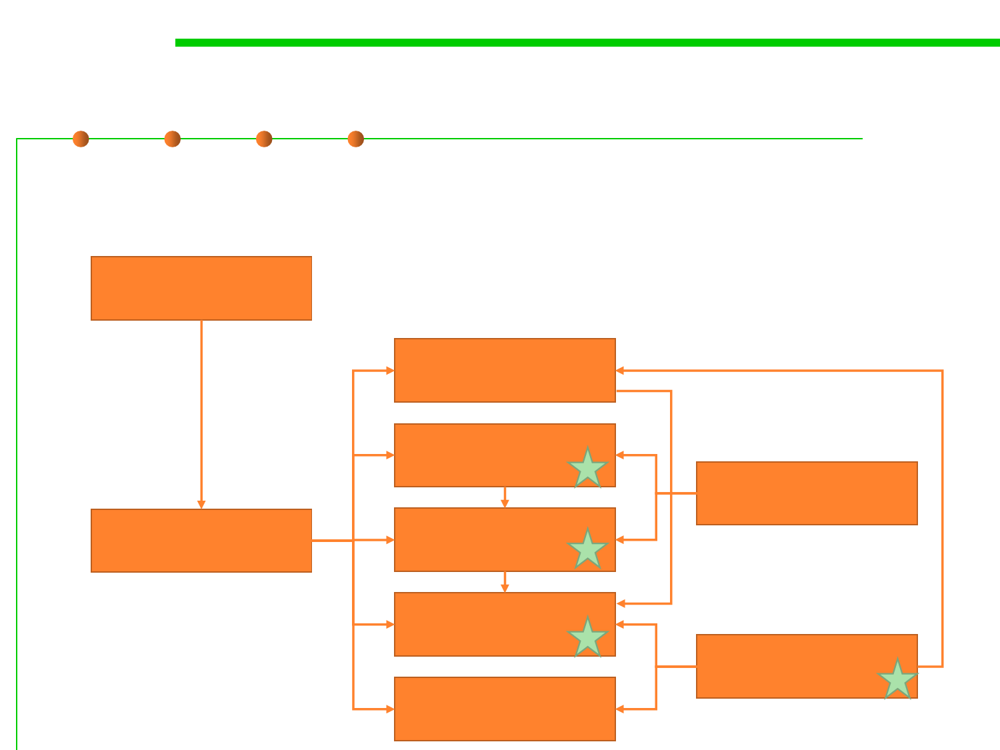

2.1 Software Lifecycle and Configuration Management
Software Development Lifecycle (SDLC)
▪ This is to be studied in the course “Software Processes and Tools”
(Software Engineering track of the 3rd year)
1 Introduction
3 Project Mgmt.
2 Software
process model
5 Req. Eng.
6 Analysis and
design
7 Testing and
quality
8 Maintenance
4 UML
9 SCM